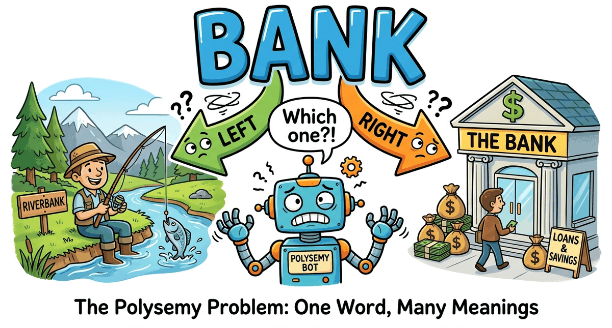
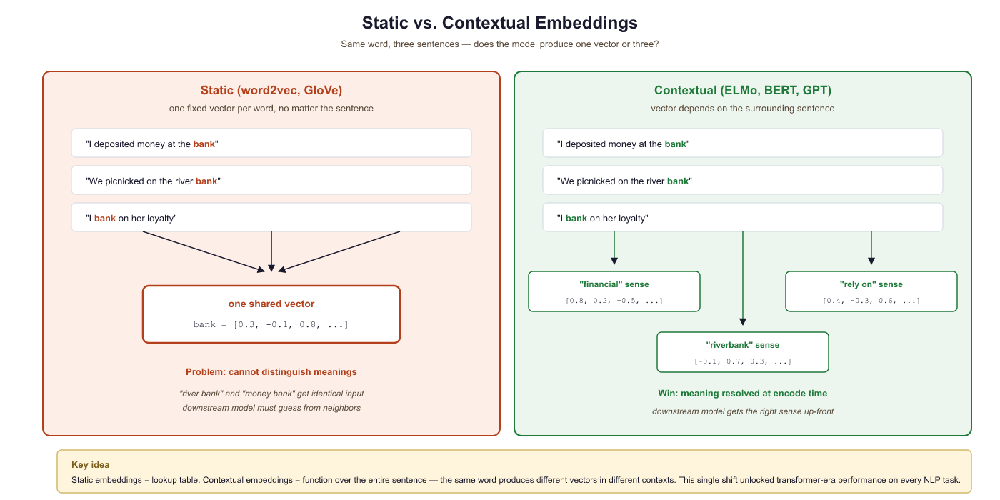
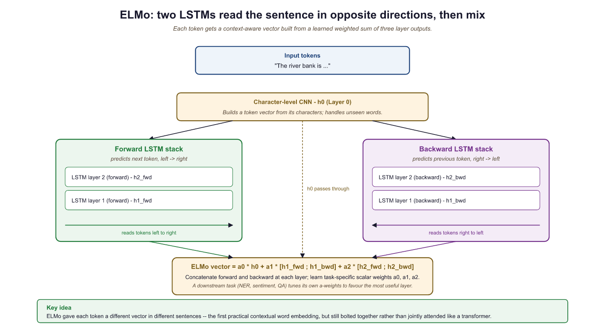
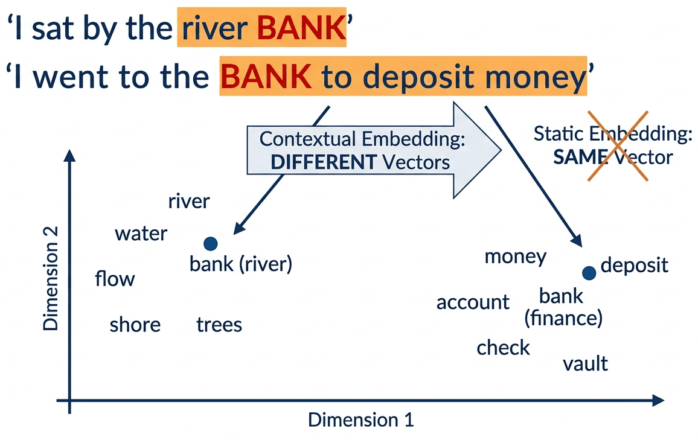
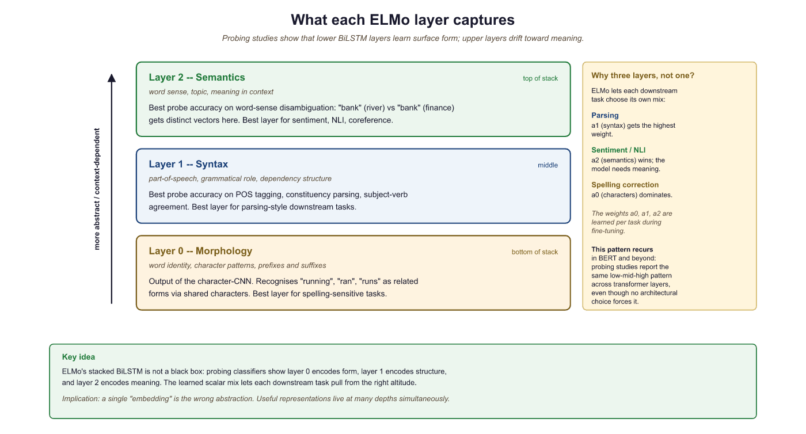
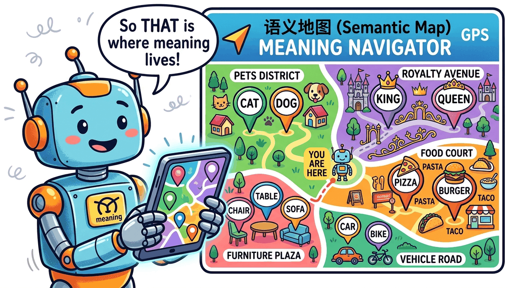
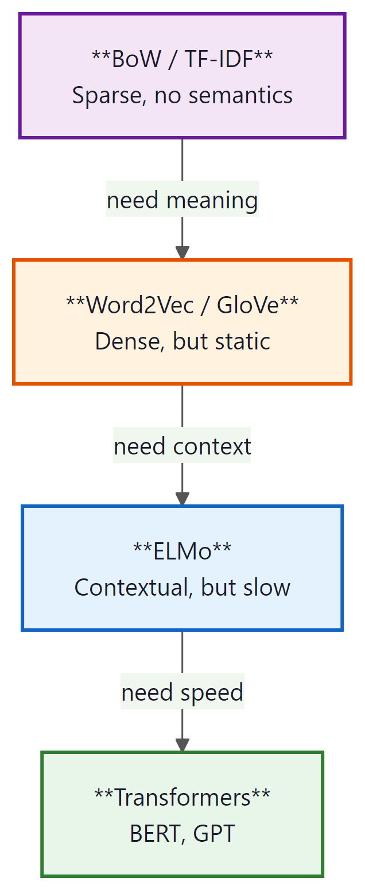

A word's meaning depends on context, they said. So does my performance review, but nobody built ELMo for that.
Lexica, Context-Dependent AI Agent
Static embeddings (Word2Vec, GloVe) assign one fixed vector per word, ignoring context entirely. Contextual embeddings, pioneered by ELMo, broke this limitation by producing different vectors for the same word in different sentences. This idea of context-dependent representation became the foundation for every modern LLM, from BERT to GPT-4. Understanding how ELMo works illuminates the "pretrain then fine-tune" paradigm that dominates NLP today and sets the stage for the Transformer architecture in Section 3.1.
Prerequisites
This section assumes you understand static word embeddings (Word2Vec, GloVe) from Section 1.3 and their key limitation: one vector per word regardless of context. The "pretrain then fine-tune" paradigm introduced in this section is a key bridge to the transformer architecture covered later in the book.
The Polysemy Problem
Word2Vec, GloVe, and FastText share a fundamental limitation: each word gets exactly one vector, regardless of context. But language is deeply contextual.
Think of the word "bank" as an actor who changes costume between scenes: a financial institution in one act, a riverbank in another, a verb of trust in a third. Word2Vec hired one actor and asked them to play all three roles in the same outfit, which is why the result feels blurry. ELMo finally let the actor change costumes between scenes, which is the entire reason contextual embeddings won.
Consider the word "bank":
- "I deposited money at the bank." → financial institution
- "We sat on the river bank." → edge of a river
- "Don't bank on it." → to rely on
With Word2Vec, all three uses map to the same vector: a compromise that captures none of the meanings well. This is called the polysemy problem.


How many different meanings does the word "run" have in these sentences? Would Word2Vec give them different or identical vectors?
- "I went for a run this morning." (exercise)
- "There was a run on the bank." (financial panic)
- "She has a run in her stockings." (tear in fabric)
- "The program takes a long time to run." (execute)
Reveal answer
Four completely different meanings, but Word2Vec assigns one single vector for all of them. That vector would be a blurry average of all four meanings, capturing none of them well. This is exactly the problem contextual embeddings solve.
Static embeddings treat meaning as a fixed property of the word itself: one entry, one vector. Contextual embeddings treat meaning as a property of the word in its specific sentence. Linguists have long distinguished between these views: the surrounding context selectively activates one sense of an ambiguous word while suppressing others, a process cognitive scientists call "sense coercion." The shift from Word2Vec to ELMo mirrors this insight: from fixed dictionary definitions to meaning that depends on use.
The polysemy problem is not merely an engineering annoyance; it is the central challenge that motivated the next generation of embedding models. The solution came from a conceptual leap: instead of assigning one vector per word type (the dictionary entry), assign a different vector for every word token (each occurrence in context).
ELMo: Embeddings from Language Models (2018)
Word2Vec assigns one vector per word type (the dictionary entry for "bank"). ELMo assigns a different vector for every word token (each individual occurrence of "bank" in a sentence). This distinction, which linguists have made for centuries, was first operationalized at scale by ELMo. Every contextual model since, including BERT and GPT, follows this same principle.
ELMo (Peters et al., 2018) was published under a name that hints at the playful culture of NLP research: it stands for Embeddings from Language Models, but the acronym was chosen to reference the Sesame Street character. Its successor, BERT, kept the tradition alive.
An LSTM (Long Short-Term Memory network, covered in Chapter 0) is a type of recurrent neural network designed to remember information over long sequences. Unlike a basic RNN, which struggles with vanishing gradients, an LSTM uses gating mechanisms (input, forget, and output gates) to selectively retain or discard information at each time step. This makes LSTMs well suited for processing sequential data like text.
ELMo (Peters et al., 2018) was the first widely successful contextual embedding model. The key idea: run the entire sentence through a deep bidirectional LSTM, and use the hidden states as word representations. Since the LSTM has seen the whole sentence, each word's representation is influenced by its context.
How it works:
- Train a bidirectional language model (forward LSTM + backward LSTM) on a large corpus
- For each word in a sentence, extract hidden states from all layers
- The ELMo embedding is a learned weighted combination of all layer representations

The breakthrough: "bank" in "river bank" now gets a different vector than "bank" in "bank account", because the LSTM hidden states are conditioned on the entire sentence.

Why Different Layers Capture Different Information
A remarkable finding from the ELMo paper: different layers of the LSTM capture different types of linguistic information:
- Layer 0 (token embeddings): Captures basic word identity and morphological features, similar to Word2Vec. "Running" is close to "runner" and "runs."
- Layer 1 (first LSTM): Captures syntactic information: part of speech, grammatical role. The model has learned whether a word is a noun, verb, or adjective from context.
- Layer 2 (second LSTM): Captures semantic information: word sense disambiguation, topical context. This is the layer that distinguishes "river bank" from "bank account."
Consider the word "bank" in the sentence "She walked along the river bank."
- Layer 0 recognizes "bank" as a familiar token, placing it near other common nouns.
- Layer 1 identifies that "bank" functions as a noun in this sentence (not a verb as in "bank the shot"), based on its syntactic position after "river."
- Layer 2 disambiguates the meaning: because the surrounding context includes "river" and "walked along," this layer shifts the representation toward the geographic feature sense, away from the financial institution sense.
Each layer refines the representation, moving from raw identity to grammatical role to contextual meaning.

This is why ELMo uses a weighted combination of all layers (the α weights in the diagram above): different downstream tasks benefit from different layers. A POS (part-of-speech) tagger might weight Layer 1 heavily, while a sentiment classifier might rely more on Layer 2. The weights are learned during fine-tuning for each specific task.
ELMo improved the state of the art on every single NLP benchmark it was tested on: question answering, sentiment analysis, NER (named entity recognition, labeling spans like people, places, and organizations), coreference resolution (linking pronouns and noun phrases that refer to the same entity), and more. The gains were typically 3 to 10% absolute improvement, which was enormous by the standards of 2018. This proved definitively that contextual representations were the future, and set the stage for BERT just six months later.
ELMo introduced what would become the dominant paradigm in NLP: pretrain a model on a large unlabeled corpus (learning general language understanding), then fine-tune or use the representations for specific tasks. This is exactly what BERT, GPT, and all modern LLMs do, just at a much larger scale.
Contextual Embeddings in Code
While ELMo itself is rarely used directly today (BERT and transformers have superseded it), we can demonstrate the concept of contextual embeddings using Hugging Face Transformers, which makes it easy to extract hidden states from any model:
# Demonstrating contextual embeddings: same word, different vectors
from transformers import AutoTokenizer, AutoModel
import torch
from scipy.spatial.distance import cosine
# Load a BERT model (the modern successor to ELMo)
# NOTE: First run will download bert-base-uncased (~420 MB).
tokenizer = AutoTokenizer.from_pretrained("bert-base-uncased")
model = AutoModel.from_pretrained("bert-base-uncased")
def get_word_embedding(sentence, word):
"""Extract the contextual embedding for a specific word in a sentence."""
inputs = tokenizer(sentence, return_tensors="pt")
with torch.no_grad():
outputs = model(**inputs)
# Find the token position for our word
# WARNING: This assumes the target word is a single token. If BERT's tokenizer
# splits the word into subwords (e.g., "deposit" -> "dep" + "##osit"), this
# lookup will fail. For production code, you would need to handle multi-token
# words by averaging their subword embeddings.
tokens = tokenizer.tokenize(sentence)
word_idx = tokens.index(word) + 1 # +1 for [CLS] token
# Return the hidden state at that position
return outputs.last_hidden_state[0, word_idx].numpy()
# "bank" in two different contexts
bank_river = get_word_embedding("I sat by the river bank", "bank")
bank_money = get_word_embedding("I went to the bank to deposit money", "bank")
# Measure how different the two "bank" vectors are
distance = cosine(bank_river, bank_money)
print(f"Cosine distance between 'bank' in different contexts: {distance:.3f}")
# Output: ~0.35: substantially different vectors for the same word!
# Compare: "bank" (river) is closer to "shore" than to "bank" (money)
shore = get_word_embedding("We walked along the shore", "shore")
print(f"Distance bank(river) to shore: {cosine(bank_river, shore):.3f}")
print(f"Distance bank(river) to bank(money): {cosine(bank_river, bank_money):.3f}")
# bank(river) is CLOSER to "shore" than to bank(money)!
# This is exactly what contextual embeddings solve.For production sentence embeddings, sentence-transformers handles tokenization, pooling, and normalization in two lines:
Show code
from sentence_transformers import SentenceTransformer
model = SentenceTransformer("all-MiniLM-L6-v2")
embeddings = model.encode([
"I sat by the river bank",
"I went to the bank to deposit money",
"We walked along the shore"
])
# embeddings.shape: (3, 384), ready for cosine similaritysentence-transformers to produce dense 384-dimensional vectors; the two "bank" sentences land in different regions of the space, showing how contextual embeddings disambiguate polysemy before any cosine comparison.pip install sentence-transformers
ELMo (2018) proved the concept, but BERT (2018, released just months later) does the same thing better and faster using transformers instead of LSTMs. Both produce contextual embeddings; the code above works identically with either. We use BERT here because it is readily available via Hugging Face and is the tool you would actually use in practice. The concept (same word gets different vectors in different contexts) is ELMo's contribution; the implementation is modern.
Who: NLP team at a health-tech startup building a named entity recognition (NER) system to extract drug names, conditions, and procedures from clinical notes
Situation: The initial system used GloVe embeddings (300-dimensional, trained on Wikipedia) as input features for a BiLSTM-CRF tagger. It achieved 79% F1 on a labeled test set of 3,000 clinical notes.
Problem: The system consistently failed on ambiguous medical terms. "Discharge" could mean a patient leaving the hospital or fluid leaving a wound. "Culture" could mean a lab test or a patient's background. GloVe gave each word a single vector regardless of context, causing the tagger to misclassify these terms roughly 40% of the time.
Dilemma: The team considered building hand-crafted disambiguation rules (brittle, incomplete), training domain-specific GloVe on medical text (would not solve the fundamental polysemy issue), or replacing GloVe with contextual embeddings from a pretrained model.
Decision: They replaced GloVe inputs with contextual embeddings from BioBERT (a BERT model pretrained on PubMed articles), feeding BioBERT's hidden states into the same BiLSTM-CRF architecture.
How: Extracted the last hidden layer from BioBERT for each token, then used these 768-dimensional vectors as input features. The rest of the pipeline remained identical.
Result: F1 jumped from 79% to 89.4%. Accuracy on ambiguous terms specifically improved from 60% to 87%. The model correctly distinguished "discharge" (procedure) from "discharge" (event) based on surrounding clinical context.
Lesson: Contextual embeddings are not a marginal improvement over static embeddings; they are transformative for tasks involving polysemy. In domains where the same word carries different meanings in different contexts (medicine, law, finance), the switch from static to contextual representations is the single highest-impact change you can make.
From ELMo to Transformers: What Changed
Let us compare the approaches side by side to see the progression clearly:
| Property | Word2Vec / GloVe | ELMo | BERT / GPT (next chapters) |
|---|---|---|---|
| Context-aware? | No (static) | Yes (bi-LSTM) | Yes (self-attention) |
| Pretrained? | Yes | Yes | Yes (much larger scale) |
| Architecture | Shallow network | Deep bi-LSTM | Transformer |
| Approx. parameters | ~300K to 3M (embedding table only) | ~93M | ~110M (BERT-base) to 175B (GPT-3) |
| Handles polysemy? | No | Yes | Yes (better) |
| Parallelizable? | N/A | No (sequential) | Yes (all at once!) |
| Long-range context? | Window only | Limited by LSTM memory | Full sequence via attention |
The key limitation of ELMo was its reliance on LSTMs, which process text sequentially (one word at a time). This made training slow and limited the model's ability to capture very long-range dependencies. The Transformer architecture (Chapter 3) solves this by processing all words simultaneously using self-attention.
Who: Applied ML researcher at an academic institution building a part-of-speech tagger for low-resource African languages
Situation: Using multilingual BERT (mBERT) to extract features for POS tagging in Yoruba. The researcher needed to decide which of the 12 transformer layers to use as input features for the downstream CRF tagger.
Problem: Using only the final layer (layer 12) gave 74% accuracy, which was disappointing given that English POS tagging with the same setup reached 97%.
Dilemma: The options were to fine-tune the entire mBERT model (expensive, risk of catastrophic forgetting on 500 labeled sentences), use a fixed layer (which one?), or use a learned weighted combination of all layers (the ELMo approach).
Decision: Following the ELMo insight that lower layers encode syntax while upper layers encode semantics, they tested individual layers and found that layers 6 through 8 performed best for POS tagging. They then used the ELMo-style weighted sum across all 12 layers, letting the model learn the optimal mixture.
How: Extracted hidden states from all 12 layers, introduced 12 learnable scalar weights (initialized uniformly), and computed the weighted sum as the input representation. Only these 12 weights and the CRF layer were trained.
Result: Accuracy improved from 74% (last layer only) to 82% (weighted combination). The learned weights confirmed that middle layers (6 through 9) received the highest weights, consistent with the syntactic-layer hypothesis from ELMo.
Lesson: The final layer of a pretrained model is not always the best feature for every task. Syntactic tasks benefit from middle layers; semantic tasks benefit from upper layers. When in doubt, use a learned weighted combination across all layers.
Summary: The Representation Journey
This module traced the evolution of how we represent text for machines. Each step solved a problem that the previous approach could not handle:

Step back, and the path from sparse to dense to contextual representations becomes a single arc. Figure 1.4.7 lines up the five milestones (BoW, TF-IDF, Word2Vec, ELMo, Transformers) so you can see at a glance which limitation each new representation was designed to fix.

The entire history of NLP can be read as a quest for better representations of meaning. Each breakthrough, from TF-IDF to Word2Vec to ELMo to Transformers, made the representation denser (fewer dimensions, more information per number), more contextual (same word, different meaning in different contexts), and more general (works across tasks without task-specific engineering). Understanding this trajectory is the key to understanding where the field is heading next.
- Context changes meaning. Unlike static embeddings, contextual embeddings produce different vectors for the same word in different sentences, solving the polysemy problem.
- ELMo pioneered the "pretrain then fine-tune" paradigm. A bidirectional LSTM is pretrained on a large corpus, then its internal representations are used as features for downstream tasks.
- Different layers capture different information. Lower ELMo layers encode syntax (part of speech, word order), while upper layers capture semantics (word sense, sentiment).
- ELMo's limitations motivated Transformers. Sequential processing limits parallelism and long-range dependencies, leading directly to the attention-based architecture covered in later chapters.
What's Next?
The discussion continues in Section 1.4a: Contextual Embeddings Lab, BERT Pretraining & Exercises, which puts these ideas into practice with a Word2Vec-vs-BERT polysemy lab, a step-by-step walk through BERT's pretraining recipe (MLM + NSP), and exercises on the static-to-contextual story. After that, Section 1.5 turns to tokenization.